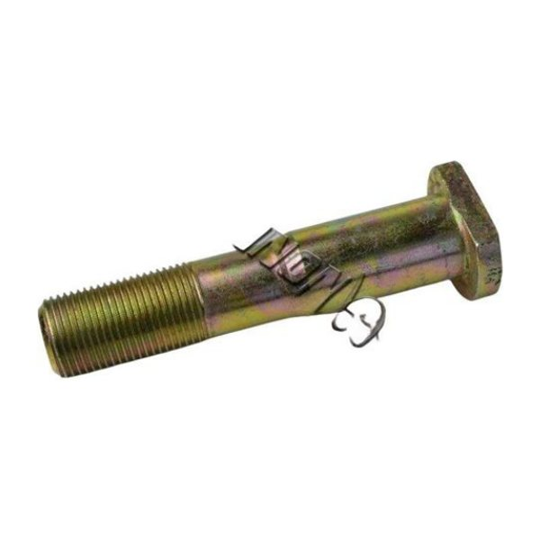

Parts › Wheels & Hubs › 13227-401

Available
Email for a quote
Nissan 13227-401 Wheel Bolt (Brake Drum)
| OEM part number | 13227-401 |
| Fits | Nissan |
| Models / notes | LO2 2.0-2.5T |
| Category | Wheels & Hubs |
| Type | Aftermarket replacement |
Send us the quantity you need and we'll reply with pricing, usually within 24 hours. Not the exact part? We can source it. Send the part number or a photo.